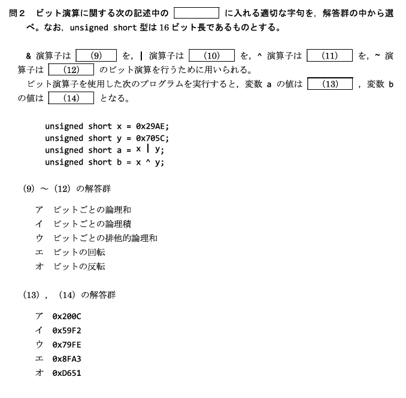
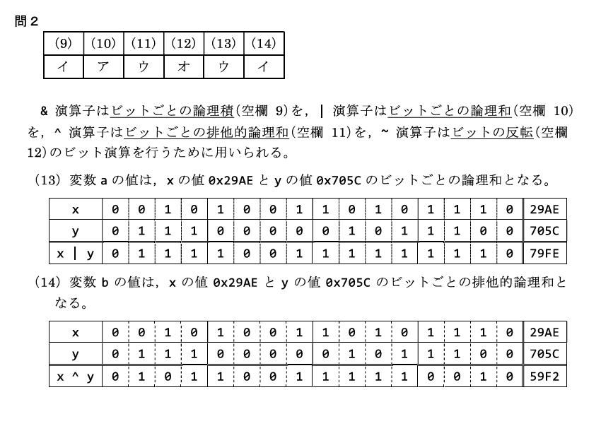

ビット演算は、整数値を ビット（0と1）単位で操作する演算である。効率的な計算やデータの操作が可能になる。2級では、各演算子の動作・シフトと2倍/半分の関係・符号付き右シフトの挙動・ビットマスクが問われる。
&(AND) |(OR) ^(XOR) ~(NOT) の動作が分かる ② 左シフト <<＝×2／右シフト >>＝÷2 を説明できる ③ 符号付き右シフトは符号ビットを維持・符号なしは0挿入 を区別できる ④ ビットマスクで特定ビットを取得（&）・設定（|）できる。
整数を2進数とみなし、ビットごとに演算する。基本は次の4つ。
| 演算子 | 名称 | 動作概要 | 例（2進数） |
|---|---|---|---|
& | ビットごとの論理積（AND） | 両方のビットが1のときだけ1、それ以外は0 | 1101 & 1011 = 1001 |
| | ビットごとの論理和（OR） | 少なくとも1つのビットが1なら1 | 1101 | 1011 = 1111 |
^ | 排他的論理和（XOR） | 2つのビットが異なるとき1（同じなら0） | 1101 ^ 1011 = 0110 |
~ | ビットの反転（NOT） | 各ビットを反転（0→1、1→0） | ~1101 = 0010 |
& | は、論理演算子 && ||（条件式の AND/OR）とは別物。ビット演算子は1ビットずつ、論理演算子は「真偽（0かそれ以外か）」全体を見る。
1101 & 1011 を桁ごとにそろえて計算すると、両方が1の桁だけ1になる。
1 1 0 1
&) 1 0 1 1
---------
1 0 0 1 ← 両方1の桁だけ1シフト演算はビットの並びを左右にずらす演算である。
| 演算子 | 動作 | 意味 |
|---|---|---|
x << n | ビットを左に n 個ずらし、右側に0を入れる | ×2n（1回で2倍） |
x >> n | ビットを右に n 個ずらす | ÷2n（1回で半分） |
x = 5（2進数 0000 0101）をシフトする。
5 << 1 : 0000 0101 → 0000 1010 (10進数 10 ＝ 5×2)
5 << 2 : 0000 0101 → 0001 0100 (10進数 20 ＝ 5×4)20（2進数 0001 0100）をシフトする。
20 >> 1 : 0001 0100 → 0000 1010 (10進数 10 ＝ 20÷2)
20 >> 2 : 0001 0100 → 0000 0101 (10進数 5 ＝ 20÷4)x << 3 なら ×8（2の3乗）。乗算・除算をシフトで高速に置き換えられる、というのがビットシフトの旨み。
同じ「2倍・4倍」は、ふつうの算術でもシフトでも書ける。
int x;
int result1;
int result2;
int result3;
x = 5;
result1 = x * 2; /* 通常の算術：2倍 → 10 */
result2 = x * 4; /* 通常の算術：4倍 → 20 */
result1 = x << 1; /* シフト：2倍 → 10（0000 0101 → 0000 1010） */
result2 = x << 2; /* シフト：4倍 → 20 */
result3 = x >> 1; /* シフト：1/2 → 2（端数は切り捨て） */5 >> 1 は 0000 0101 → 0000 0010 ＝ 2（2.5 ではなく切り捨て）。
右シフトは「左側に何を入れるか」が型で変わる。ここが2級頻出。
unsigned）：左側に必ず 0 を入れる。signed）：右シフトで 符号ビット（一番左のビット）を維持する（処理系の多くがこの「算術シフト」）。負の数は左側に1が入る。負の数は2の補数で表される。-8 は8ビットで 1111 1000。これを右シフトすると：
-8 >> 1 : 1111 1000 → 1111 1100 (10進数 -4)
↑
左側に符号ビット 1 が入る（符号が保たれる）-8 >> 1 は -4（負のまま、値は半分）。もし左側に0を入れてしまうと正の大きな数になってしまう。符号なしなら常に0挿入。
5 << 32 は無効。「ビット数を超えるシフトはしない」と覚える。
ビット演算は、整数の「特定の位置のビットだけ」を取り出したり立てたりするのに便利。これに使う値を マスク と呼ぶ。
&（AND）取り出したい桁だけ1にしたマスクと & を取ると、その桁だけが残る。
unsigned short x;
unsigned short mask;
unsigned short result;
x = 0x5A; /* 0101 1010 */
mask = 0x0F; /* 0000 1111 ← 下位4ビットだけ1 */
result = x & mask; /* 下位4ビットを取得 */ 0101 1010 (x = 0x5A)
&) 0000 1111 (mask = 0x0F)
-----------
0000 1010 (result = 0x0A ＝ 10進数 10)上位4ビットは 0 & … で消え、下位4ビットだけが残る。
|（OR）立てたい桁だけ1にしたマスクと | を取ると、その桁が必ず1になる（他の桁は変わらない）。
unsigned short x;
unsigned short mask;
unsigned short result;
x = 0x5A; /* 0101 1010 */
mask = 0x01; /* 0000 0001 ← 最下位ビットだけ1 */
result = x | mask; /* 最下位ビットを1に設定 */ 0101 1010 (x = 0x5A)
|) 0000 0001 (mask = 0x01)
-----------
0101 1011 (result = 0x5B ＝ 10進数 91)&、設定（1を立てる）は |。ついでに「反転（トグル）は ^」もセットで覚えると強い。
&(AND)・|(OR)・^(XOR)・~(NOT) の4つ。1ビットずつ計算する。<< ＝ ×2（右側に0挿入）、右シフト >> ＝ ÷2。乗除をシフトで高速化できる。-8 >> 1 は -4。&、設定は |。型のビット幅を超えるシフトはしない。

Q1. 次のコードの result の値はどれか。
int x = 6;
int result = x << 2;正解：イ（24）
左シフト1回が×2なので、<< 2 は ×4。6×4 ＝ 24。2進数では 0000 0110 → 0001 1000（10進数 24）。
Q2. 次のコードの result の値はどれか。
unsigned short x = 0x3C; /* 0011 1100 */
unsigned short mask = 0x0F; /* 0000 1111 */
unsigned short result = x & mask;正解：ア（0x0C）
& は両方1の桁だけ残す。マスク 0x0F ＝ 0000 1111 は下位4ビットだけ1なので、0011 1100 & 0000 1111 = 0000 1100 ＝ 0x0C。下位4ビットの取得。
Q3. 次のコードの result の値はどれか。
signed int x = -8; /* 1111 1000（2の補数表現） */
signed int result = x >> 1;正解：ア（-4）
符号付き整数の右シフトは 符号ビット（1）が維持されるため、1111 1000 → 1111 1100 となり 10進数 -4。値は半分（÷2）になり、符号は負のまま保たれる。符号なしなら左側に0が入る。
Q4. 2進数の計算 1101 & 1011 の結果はどれか。
正解：ウ（1001）
AND は両方のビットが1の桁だけ1。桁ごとに見ると 1&1=1、1&0=0、0&1=0、1&1=1 で 1001。なお同じ組み合わせで OR なら 1111、XOR なら 0110。
Q5. 整数のあるビットを「1に設定する（立てる）」のに使う演算子はどれか。
正解：イ（OR）
立てたい桁だけ1にしたマスクと | を取ると、その桁が必ず1になる（他は不変）。逆に特定ビットを取得するなら &（AND）を使う。